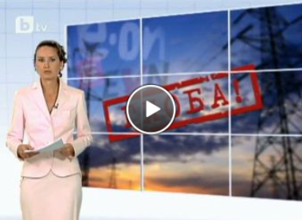

Новините
Спорт
Емисии
Любопитно
Аз, репортерът
Тази сутрин
Интернет новини - 13.07.2010 г
Проливни дъждове в Дания, Китай и Индия, необичайни горещини в Иран
Над 200 хектара горят на територията на бивш военен полигон в Германия
23-ма ранени при сблъсък на 2 патнически влака в Полша
Диференцират от догодина минималния осигурителен доход за самоосигуруващите се
